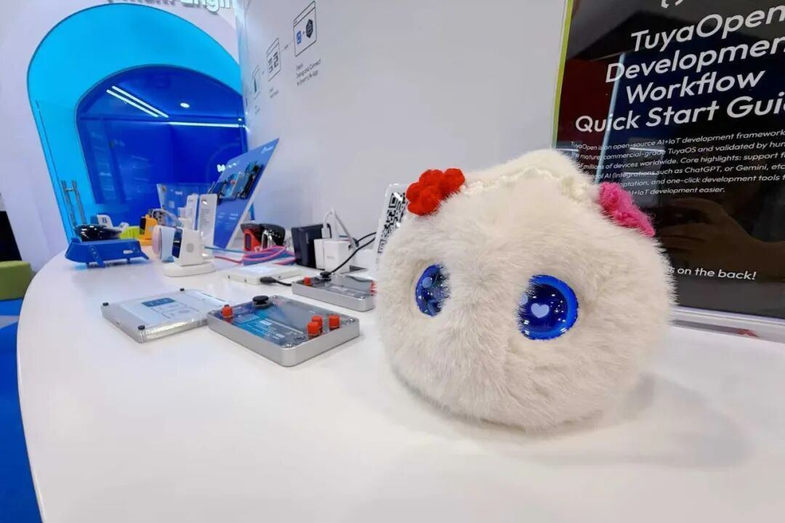

本届CES，也是“超级球球”第⼀次⾛出国⻔，亮相国际重量级展会。众多海外客⼾和观众现场体验了“超级球球”，其全英⽂对话能⼒、出⾊的情绪回应与陪伴价值，给很多CES观众留下了深刻印象。
同时，有爱智能也借助CES参展机会，对海外特别是北美市场做了进⼀步调研。尽管⼼理服务在欧美国家的接受度⾼于中国，但仍然存在严重的⼼理健康服务资源短缺。不同于提供浅层情绪价值的普通AI⽑绒玩具，“超级球球”定位于“AI+⼼理”，对话内容具有共情性、接纳性等鲜明的⼼理学特⾊，恰恰具备填补传统⼼理健康服务空⽩的巨⼤潜⼒。
未来，有爱智能有机会与北美等地区的机构（学校、医院等）合作，推出更契合海外⽤⼾实际需求的产品，让基于专业⼼理学的AI陪伴，成为跨越⽂化和地域的温暖⼒量。